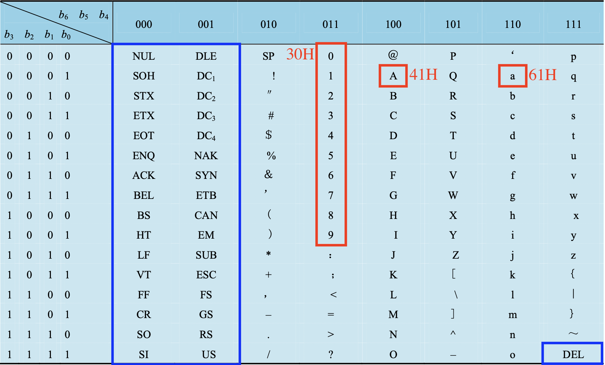

字符、字符串的表示方法
7位二进制编码可以表示 个字符，其中有 个有形字符，剩余 个为控制码（编码值为：、）。

用一个字节存储一个字符，存储时字节的最高位取0。在传输时，最高位可以用作奇偶校验位。
ASCII码的规律：
- 字符 的ASCII码的低 位即其相应8421码。（
011+ 8421码） - 大写字母与小写字母的ASCII码的区别为：大写字母的第 位为
0，小写字母的第 位为1。因此数值上，大写字母的ASCII码比相应小写字母小 。
当主存中一个字由若干个字节构成时，在一个字内，字符串中各个字符既可从低字节向高字节依次存放，也可按从高字节到低字节顺序存放。不同的计算机可以选用其中任何一种。